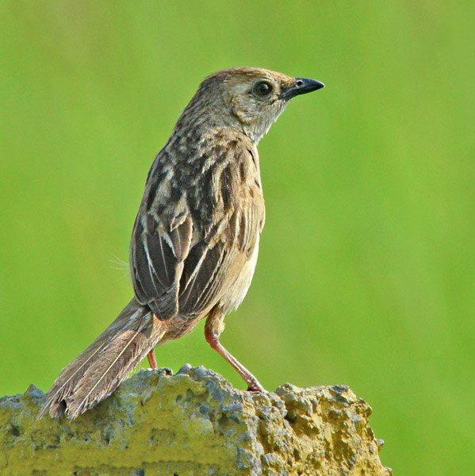

ब्रिसल्ड ग्रासबर्डBristled Grassbird
Chaetornis striata · Acrocephalidae · BRD-0245

- Scientific name वैज्ञानिक नाम
- Chaetornis striata (Jerdon, 1847)
- Family कुल
- Acrocephalidae
- Hindi हिंदी
- ब्रिसल्ड ग्रासबर्ड
- Local names स्थानीय नाम
- bristled grassbird, grassbird
- Status here यहाँ की स्थिति
- native
- Movement आवागमन
- Resident, here all year
- Known from कहाँ दर्ज
- Others have published records from the Basti–Ayodhya districts बस्ती–अयोध्या के ज़िलों से दूसरों के प्रकाशित अभिलेख
- IUCN IUCN
- VU
- Review समीक्षा
- audited and independently read
When to look कब देखें
Present all year. साल भर मौजूद।
Uses and possibilities उपयोग और संभावनाएँ
Drawn from the documented uses in the profile below, where each is labelled traditional, current or a research lead. All uses →
Tell it apart from इनसे अलग पहचानें
ब्रिसल्ड ग्रासबर्ड / Bristled Grassbird
Chaetornis striata (Jerdon, 1847) — Acrocephalidae
ब्रिसल्ड ग्रासबर्ड — यह पूर्वी उत्तर प्रदेश की नदियों और तालाबों के पास की दलदली ज़मीन में साल भर रहने वाली एक दुर्लभ और असाधारण चिड़िया है। बहुत सावधान, छिपी रहने वाली, इसे देखना मुश्किल है। लेकिन अगर आप रीड की घनी बेलों में झाँकें, तो आप इसकी ख़ूबसूरत धारीदार पंखों और सफेद पेट को देख सकते हैं। यह पक्षी अब विलुप्त हो रहा है क्योंकि इसके घरौंदे की रीडें लगातार कम हो रही हैं।
Quick Identification त्वरित पहचान
| Feature | Description |
|---|---|
| Size | Small warbler; 17–20 cm long |
| Crown and back | Heavily streaked dark brown and buff; striped pattern |
| Underparts | White to pale buff with brown flanks |
| Wings | Brown with buff fringes; heavily marked feathers |
| Tail | Long, graduated; brown |
| Behaviour | Secretive; creeps through dense reeds; rarely emerges |
| Call | Harsh churring and loud metallic churr-churr-churr |
Field tip: In reed beds and tall grasslands near water, look for a small, heavily streaked brown warbler moving furtively through dense vegetation, rarely taking exposed perches. Its loud, harsh churring call is more often heard than the bird seen. The striped plumage provides excellent camouflage.
हिंदी — कैसे पहचानें:
छोटी, बहुत सावधान चिड़िया।
भूरी-सफेद धारीदार पंखें।
रीड की घनी बेलों में छिपी रहती है।
तेज़ कठोर आवाज़ करती है।
Morphology आकारिकी
Biometrics:
| Measurement | Range |
|---|---|
| Total length | 170–200 mm |
| Wing (flattened chord) | 64–72 mm |
| Tail | 85–100 mm |
| Bill | 16–18 mm |
| Tarsus | 24–27 mm |
| Weight | 18–24 g |
Size: 17–20 cm long; wingspan 24–28 cm. Weight 18–24 g. A small warbler with relatively long tail.
Plumage: Crown and nape heavily streaked dark brown and buff. Back dark brown with heavy buff streaking, creating a striped appearance that provides excellent camouflage in reed beds. Rump and upper tail-coverts darker. Supercilium (eyebrow) buff and barely visible. Lores buff. Throat white. Breast and belly white to pale buff with brown flanks. Undertail-coverts buff. Wings brown with pale buff fringes to feathers. Tail brown, graduated, often held cocked upright.
Bill: Medium length, slender, slightly decurved, dark brown. Adapted for gleaning insects from reeds.
Legs and feet: Dark brown; medium length, adapted for clinging to reed stems.
Eyes: Dark brown.
Sexual dimorphism: Minimal; subtle plumage differences between sexes, females slightly duller.
Juveniles: More broadly streaked than adults; buffer below.
Vocalisations. Call repertoire:
- Alarm and contact call: Loud, harsh metallic churr-churr-churr or char-char, typically given while creeping through reeds. Frequency.
- Song: Series of harsh warbling notes interspersed with churring, delivered from concealment or from a reed stem; often silent for long periods.
- Call notes: Sharp tik or tek notes of alarm or excitement.
हिंदी: तेज़, कठोर "चर-चर-चर" आवाज़ देता है। अक्सर छिपकर बोलता है।
Behaviour & Ecology व्यवहार और पारिस्थितिकी
Insectivorous reed-dweller: Bristled Grassbirds feed on insects gleaned from reed stems and marsh vegetation:
- Small insects (flies, mosquitoes, small beetles)
- Spiders and spider eggs
- Small caterpillars
- Occasionally small seeds from reed heads
Feeding behaviour: Move creepingly through dense reed vegetation, searching methodically for insects on reed stems and seed heads. Rarely leave vegetation; fly only short distances between reed patches.
Habitat requirement: Strictly dependent on dense reed beds and tall marsh grasses. Requires uncut reed stands for roosting and breeding.
Solitary and secretive: Usually solitary or in pairs; highly cryptic. Rarely join mixed-species flocks. More often heard than seen.
Flight: Weak, fluttering flight; rarely exposed in flight. Move within dense vegetation.
Predators: Marsh harriers, shrikes, possibly nest predation by snakes and corvids.
हिंदी: रीड की बेलों में छिपा रहता है। बहुत सावधान पक्षी है। अकेले रहता है, झुंड में नहीं।
Life Cycle / Phenology जीवन चक्र
Resident breeder: Year-round resident in suitable reed-bed habitats. Breeds during monsoon and post-monsoon (June–November), taking advantage of tall reed growth.
Breeding season: Builds small cup nest of reed stems in dense reed vegetation, typically 1–2 m above water level.
Chicks: Fledged by October; dependent on parents for 2–3 weeks post-fledging.
Non-breeding season: Remains in reed beds year-round; movements limited to nearby patches.
Moult: Gradual moult (June–November); no obvious eclipse plumage.
हिंदी: साल भर रीड में ही रहता है। बारिश में अंडे देता है। नई पीढ़ी का पालन-पोषण करता है।
Host Plants or Prey आहार
| Prey Type | Examples | Feeding Behaviour |
|---|---|---|
| Small insects | Flies, mosquitoes, small beetles | Glean from reed stems |
| Spiders | Web-dwelling species | Pick from reed vegetation |
| Caterpillars | Small species | Pick from reed leaves and stems |
| Reed seeds | Partially developed seeds | Peck at seed heads |
हिंदी: छोटे कीड़े खाता है। मकड़ियों को शिकार करता है। रीड के बीज भी खाता है।
Predators / Natural Enemies शत्रु
- Avian predators: Marsh Harrier, Brown Shrike, Black Kite
- At nest: Snakes, crows, monitor lizards
- Parasites: Avian ectoparasites
हिंदी: बाज़ और श्राइक इसका शिकार करते हैं। साँपें इसके अंडे खाते हैं।
Agricultural / Human Relevance कृषि प्रासंगिकता
Pest control: Beneficial species; feeds on mosquitoes, flies, and other small insects that may carry disease.
Protected status: Protected under the Wildlife (Protection) Act 1972. Vulnerable to reed-bed destruction and agricultural encroachment.
Conservation concern: This species is classified as Vulnerable (VU) on the IUCN Red List due to extensive loss of reed-bed habitat across its range. In eastern UP, reed beds have been converted to agriculture or drained, reducing available habitat.
Wetland indicator: Presence of Bristled Grassbirds indicates healthy, extensive reed-bed ecosystems.
हिंदी: यह विधि अधिनियम 1972 के अंतर्गत संरक्षित है। रीड के जंगलों की कमी से खतरे में है।
Expected Locally स्थानीय रूप से अपेक्षित
Not a field record. Written from published accounts for eastern Uttar Pradesh. No confirmed local sighting yet — if you have seen it, that is what the atlas needs.
अभी तक स्थानीय पुष्टि नहीं। यह विवरण प्रकाशित स्रोतों से है, किसी अवलोकन से नहीं।
This species is NOT a field record. The distribution below is based on published sources describing where Bristled Grassbirds should be looked for in the Basti–Ayodhya region.
Resident range: Expected year-round in eastern Uttar Pradesh where extensive reed beds and tall marsh grasses exist. Present in floodplain marshes, particularly along the Ghaghra, Rapti, and Gomti river systems.
Habitat requirement: Large, undisturbed reed beds with standing water; absence from converted or drained wetlands.
Seasonal occurrence: Year-round resident where habitat exists; numbers may increase slightly after monsoon flooding when reed growth is vigorous.
GBIF records: GBIF holds published records from these districts in the core region.
What a first record would be: A dated photograph, sound recording, or clear sighting (with GPS coordinates and date) submitted through the About page of this atlas. This is a difficult species to document photographically due to its secretive nature.
हिंदी: यह पक्षी स्थानीय रूप से अपेक्षित है, न कि देखे गए बतौर प्रेक्षण। घाघरा और राप्ती नदी के बड़े दलदली इलाकों में साल भर रहता है। पहला रिकॉर्ड के लिए फोटोग्राफ या आवाज़ का रिकॉर्डिंग चाहिए।
Distribution वितरण
Global range: Endemic to the Indian subcontinent. Found from the Himalayas (Duars of Bhutan) south to the Deccan, through the Indo-Gangetic plains.
In India: Distributed throughout suitable reed-bed habitats in India, but increasingly localized due to habitat loss.
In Uttar Pradesh: Occurs in reed beds of major river floodplains throughout the state; populations fragmented due to reed-bed destruction.
In Basti district / eastern UP: Resident in suitable reed-bed habitats along the Ghaghra and Rapti river floodplains; increasingly rare due to conversion of wetlands to agriculture.
Research Questions शोध प्रश्न
- What is the current population size and trend of Bristled Grassbirds in eastern UP, and in which reed-bed sites are they still present?
- How does reed-bed quality (reed height, density, water level, vegetation composition) affect Grassbird density and nesting success?
- What is the diet composition throughout the year, and does it shift seasonally with insect and seed availability?
- नई बाढ़ और सूखे के बाद इस चिड़िया की संख्या में क्या परिवर्तन होता है?
- How effective are reed-cutting and reed-bed management practices in maintaining suitable Grassbird habitat? (A child can monitor reed beds before and after management.)
- क्या रीड के बिस्तर की सुरक्षा से इस दुर्लभ चिड़िया को बचाया जा सकता है?
Similar Species मिलती-जुलती प्रजातियाँ
| Species | Key Difference | Hindi | Field Rule | |
|---|---|---|---|---|
| [[booted_warbler\ | Booted Warbler]] (Hippolais caligata) | Smaller (11–12 cm); short tail; plain plumage without heavy streaking | जूते वाली गायिका | Booted Warbler is much smaller and plain, without the heavy streaking of Bristled Grassbird. |
| Large-billed Grasshopper-warbler (Locustella ochotensis) | Similar size but different structure; more locust-like call; hidden in grass | घास की बड़ी चिड़िया | Large-billed Grasshopper-warbler has a more mechanical, insect-like call and less obvious striping. |
Field rule: Bristled Grassbird is a small, heavily streaked warbler of dense reed beds, with a loud harsh churring call. Its cryptic, streaked plumage and creeping behaviour through dense reeds distinguish it from other marsh warblers. The long tail and white underparts with brown flanks are diagnostic in good view.
Taxonomy & Classification वर्गीकरण
Original description. The species was described by Thomas C. Jerdon in 1847 as Acrocephalus striatus. Later placed in the monotypic genus Chaetornis. Type locality is the river Indus near Attock (now Pakistan).
Subspecies. Monotypic — no subspecies are currently recognised. The single population occurs throughout the range.
Family and order placement. Order Passeriformes; family Acrocephalidae (marsh warblers and grasshopper-warblers). The genus Chaetornis is distinct within the family, adapted to dense reed beds.
Phylogenetic notes. Molecular studies suggest Chaetornis is an ancient lineage within Acrocephalidae, diverging early from other marsh warblers.
IUCN status rationale. The species is assessed as Vulnerable (VU) due to extensive historical and ongoing loss of reed-bed habitat across its range. Wetland conversion to agriculture, reed harvesting, and water management changes have reduced available habitat dramatically. Populations are now fragmented and declining.
हिंदी: यह प्रजाति भारत के लिए विशेष है। रीड के नुकसान से इसका संकट बढ़ रहा है।
Photo Gallery फोटो गैलरी
No photos yet — add field photos to media/species/bristled_grassbird/ and run node scripts/sync_photos.js.
Wanted photos:
- Creeping through reed stems
- Exposed perch on reed stem
- Close-up of head showing striping
- Nest in reed beds (if accessible without disturbance)
- Sound recording of alarm call
References संदर्भ
- Jerdon, T. C. (1847). Illustrations of Indian Ornithology. Madras: Self-published.
- Ali, S. & Ripley, S. D. (1968). Handbook of the Birds of India and Pakistan. Vol. 2 (Warblers to Whydahs). Oxford University Press, Delhi. Pp. 66–68.
- Rasmussen, P. C. & Anderton, J. C. (2005). Birds of South Asia: The Ripley Guide. Vol. 2. Smithsonian Institution Press, Washington, DC. Pp. 398–399.
- Loveland, T. R., Dwyer, J. L., Vogelmann, J. E., et al. (2000). Development of a global land cover characteristics database and IGBP DISCover from 1 km AVHRR data. International Journal of Remote Sensing 21(6–7): 1303–1330.
- GBIF Occurrence Data — Chaetornis striata, India.
- IUCN Red List (2021). Chaetornis striata — BirdLife International assessment. IUCN, Cambridge. Status: Vulnerable.
Source file: species/fauna/birds/bristled_grassbird.md